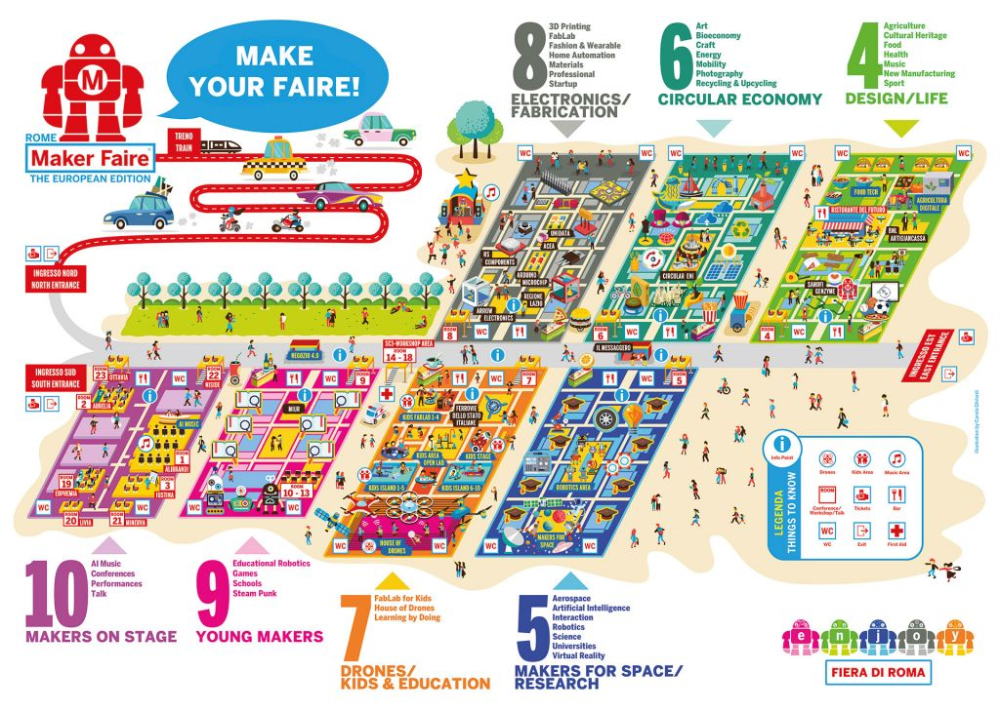

12 Ottobre 2018
Quarte Scienze Applicate
81 studenti
6 accompagnatori
Programma della visita di istruzione
Ore 6:00: partenza per Roma
Ore 10:00: Visita mattutina al Maker Faire
Ore 13:00: Pranzo
Ore 14:00: Visita pomeridiana al Maker Faire
Ore 17:00: Partenza per il rientro
Ore 21:00: Arrivo nel piazzale della scuola.
Gli studenti
Passa sopra al nome della classe per visualizzarne l'elenco:
- ANGELELLI,EDOARDO
- BELEGNI,GABRIELE
- BRADACH,NICHOLAS
- CARBONARI,KATY
- COPPARI,GIADA
- COPPARONI,RICHARD MARC
- FIORETTI,LUCA
- GENNARETTI,EDOARDO
- LATINI,JACOPO
- LEONI,TOMMASO
- MANFRINI,FILIPPO
- MINGO,TOMMASO
- PANEBIANCO,CHANTAL
- PAOLETTI,ARIANNA
- PIERGIGLI,SARA
- SAPTEBOI,ADRIANA
- SBARBATI,FEDERICO
- VIGARELLI,GIACOMO
- BONTEMPI,ALESSANDRA
- CANDELARESI,BENEDETTA
- CANTILENO,ANNA MARIA
- CARDINALETTI,ANDREA
- CINGOLANI,SANTIAGO
- DI SEBASTIANO,FILIPPO
- FRABONI,PERLA JEAN NICOLE
- LOLLI,ANDREA
- LUCHETTA,LEANDRO
- MARCHEGIANI,VANESSA
- MASE',ALESSIO
- MASSEI,SOFIA
- NASETTI,JONATHAN
- PASSERINI,GAIA
- PIANELLI,GIOVANNI
- SASSO,ALESSANDRO
- ADORISIO,ANDREA
- BARCHETTA,CHRISTIAN
- BERRETTINI,MARIA VITTORIA
- BRACACCINI,RICCARDO
- BRUNELLA,FEDERICO
- CHERUBINI,MARGHERITA
- FEDERICI,AURORA
- GABRIELLI,EDOARDO
- MASSACCESI,CARLO
- MOCCHEGIANI,RICCARDO
- OLIVIERI,DAVIDE
- PIERUCCI,ETTORE
- ROSSI,LUCA
- SANTARELLI,GIOVANNA
- SANTONI,GIOELE
- SGRECCIA,ALESSANDRO
- SINGH,AMRIT
- VESEL,IUSTINA MARIA
- ZAPPELLI,MARIA SOFIA
- GIROTTI,LUCA
- PASSARINI,FRANCESCO
- PITTORI,MICHELE
- AFFAN,SARA
- BELTRANI,LUANA
- BENTIVOGLIO MAGNER,ALESSANDRO
- BOMPREZZI,ARIANNA
- CANTIANI,PAOLO
- CASCIA,IACOPO
- CATANI,FRANCESCO
- CIATTAGLIA,GIULIA
- COLO',MANUEL
- CORINALDESI,LORENZO
- CORINALDI,MATTEO
- DAVID,ANTONIO
- DE CESARE,GIADA
- ENEI,ALESSANDRO
- GENTILI,FILIPPO
- GIORGETTI,EDOARDO
- GIULIANI,GIACOMO
- HALITI,GEVIO RUSHET
- MARTINELLI,CHRISTIAN
- MARTINO,LORENA
- PANDOLFI,SARA
- PERINI,VERONICA
- SARGENTI,GIORDANO
- SOTGIA,LUCA
- TITTARELLI,GIANFRANCO
Gli accompagnatori
- Anderlucci, Maria (4CS)
- Anselmi, Tiziana (4DS)
- Burattini, Cinzia (4AS)
- Diamantini, Andrea (4BS)
- Giaccaglini, Giorgio (4CS)
- Maiolini, Mauro (4AS)
Maker Faire Map
Clicca sulla mappa per ingrandirla o scaricarla:

{kind=link}
Istruzioni per il parcheggio
Parcheggio P1: via Luigi Stipa, Roma
Attività
Quando siete stanchi di curiosare tra gli stand, adocchiare la gente, smangiucchiare e ascoltare musica, valutate l'idea di seguire una delle seguenti attività:
Performances
Elenco di Venerdì 12 ottobre
Le attività "da fare" e "da vedere", a cui partecipare per sperimentare con mano le attività del Maker Faire
Talk & Conferences
Elenco di Venerdì 12 ottobre
Le conferenze di introduzione dei topic più importanti del Maker Faire, delle novità presentate, degli argomenti di discussione più comuni.
Workshops
Elenco di Venerdì 12 ottobre
Uno workshop è un corso di specializzazione su un argomento specifico, con esempi del mondo reale e con attività pratiche proposte ai partecipanti.